Practical Quarto: Patterns, templates, and tooling @ posit::conf(2026)
Bundled Quarto CLI
(or one it finds on your path)
= what you need to run quarto commands in the Terminal
Quarto extension
= provides the Quarto: ... commands and UI support
Learn more: https://quarto.org/docs/tools/positron
Open hello.qmd
Click Preview (aka the Render button in RStudio)
Quarto commands are run in the Terminal pane
Rendered output opens in the Viewer pane
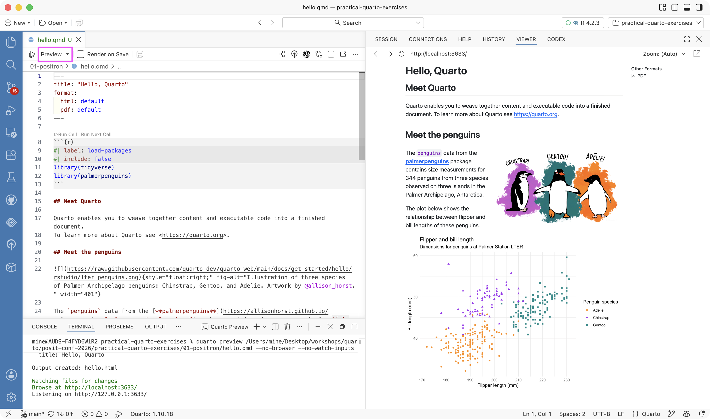
Preview button in the editor toolbar
Shortcut: cmd/ctrl + shift + K — same as Render in RStudio
Quarto version in the status bar
Runs quarto preview in the Terminal
Opens the rendered document in the Viewer
Tip
Want a real browser instead? Set quarto.render.previewType to external.
In the UI
Command palette: Preferences: Open User Settings or Preferences: Open Workspace Settings
Search by setting name, e.g. quarto.render
In JSON
Command palette: Preferences: Open User Settings (JSON) or Preferences: Open Workspace Settings (JSON)
User settings stored at user level (outside of the workspace), specific location depends on OS:
~/Library/Application Support/Positron/User/settings.json%APPDATA%\Positron\User\settings.json~/.config/Positron/User/settings.jsonWorkspace settings in .vscode/settings.json in the workspace
Any setting you change in the UI is written to the JSON
Workspace wins over User — so a project can set its own rules, and .vscode/settings.json can be checked into Git for all collaborators.
Settings can be scoped to a language, with a "[quarto]": { ... } block.
Filter for Modified settings (@modified) to see settings you’ve changed.
Right-clicking a setting offers Copy Setting as JSON.
For RStudio switchers: https://positron.posit.co/migrate-rstudio-settings-and-extensions.html covers bringing RStudio settings and keybindings across.
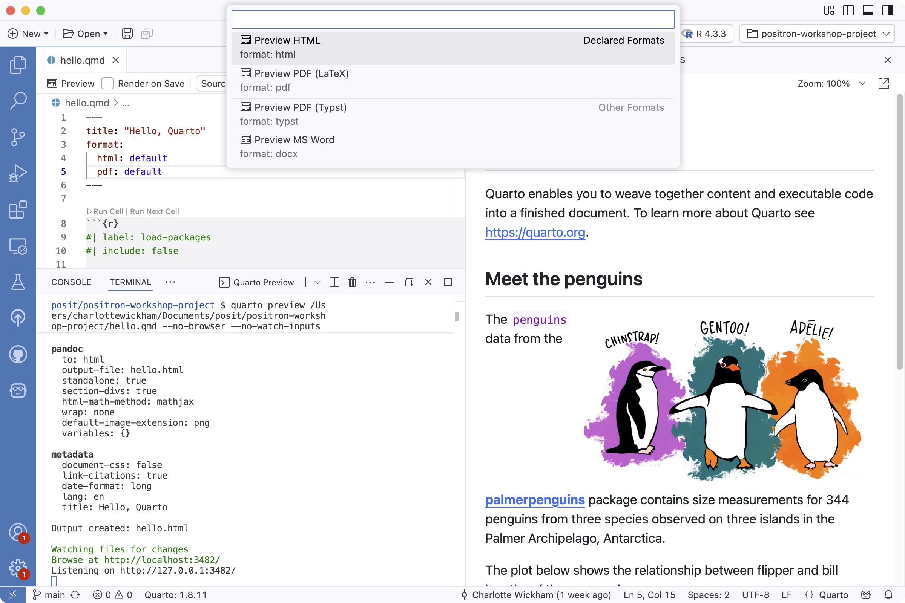
The Preview dropdown lists the formats declared in the document
Command: Quarto: Preview Format...
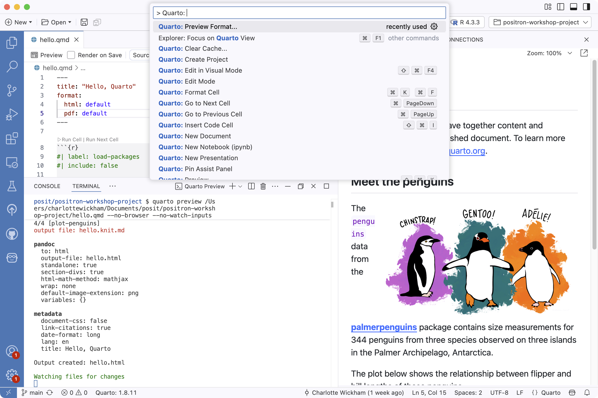
Filter the command palette with Quarto: to see the whole set
Quarto: Render Document renders all declared formats
Quarto: Render Project renders every file in the project
By default, saving does not re-render — renders can be slow.
Three ways to turn it on:
The Render on Save checkbox in the editor toolbar:
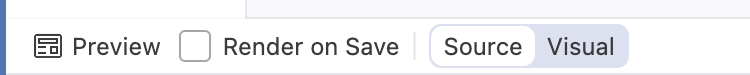
The setting quarto.render.renderOnSave — search quarto.render in Settings
Per document or project, in YAML — supersedes the setting:
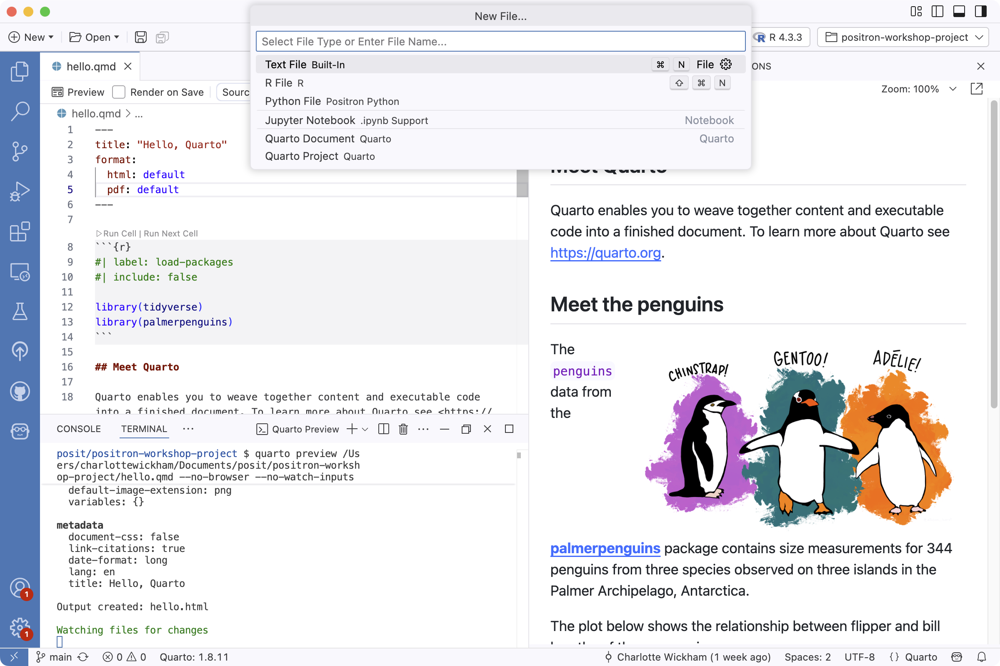
File > New File… then Quarto Document
or the command palette:
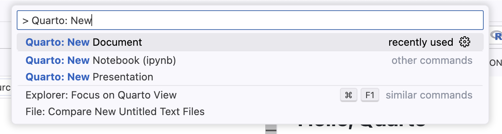
Code cells: the actions above each cell, the Quarto: Run ... commands, output in the Console or inline
Navigation: Breadcrumbs, Outline pane, Go to Symbol in Editor
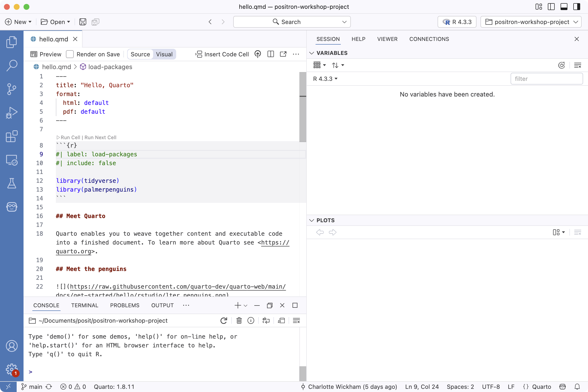
Run Cell | Run Next Cell actions above each cell
Run selection: cmd/ctrl + enter
Run cell: shift + cmd/ctrl + enter
Run all cells: opt/alt + cmd/ctrl + R
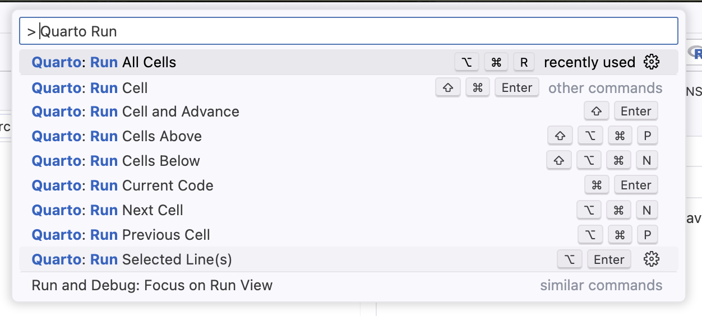
Output from code cells, in the editor, next to the code that made it — the .Rmd experience RStudio users are used to.
Off by default: turn on quarto.inlineOutput.enabled
Each .qmd gets its own isolated R or Python session
Paths behave like they do at render time — no more “works in the console, breaks on render”
Want a console alongside it? Console: Show Notebook Console, or set console.showNotebookConsoles
Exercise: 01-positron
Enable inline output for hello.qmd and run the code cells one at a time and then all at once.
Optional: Go to settings and turn on Console: Show Notebook Console.
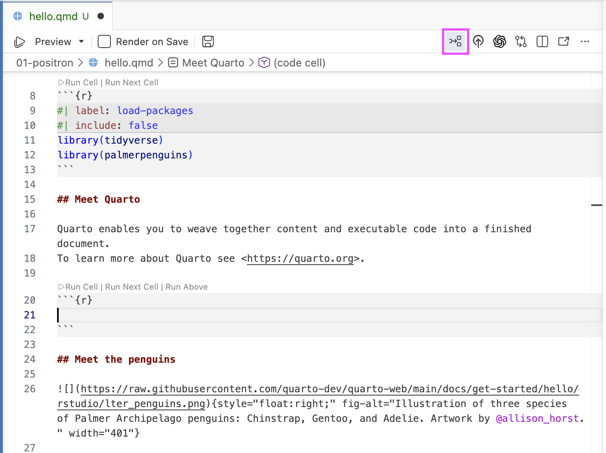
Insert Code Cell in the editor toolbar
Shortcut: shift + cmd/ctrl + I
Command: Quarto: Insert Code Cell
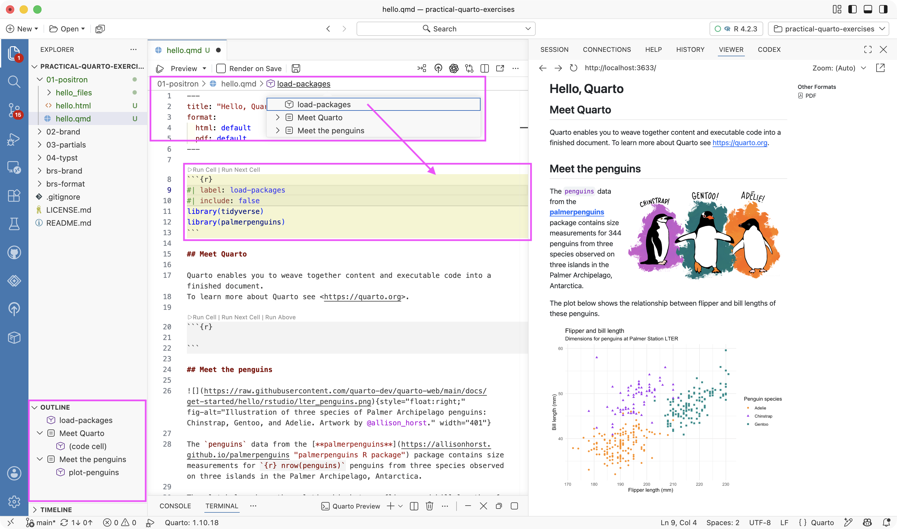
Breadcrumbs at the top of the editor
Outline pane in the sidebar
Go to Symbol in Editor: cmd/ctrl + shift + O, or type @ in the command palette
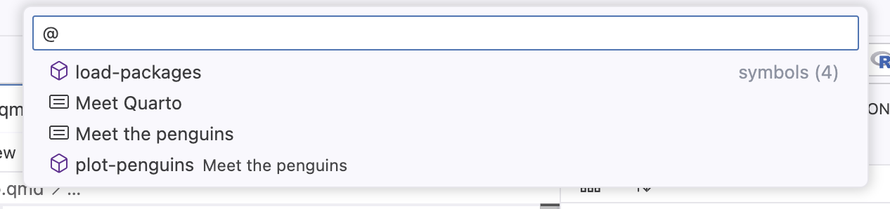
YAML intelligence: Completion for YAML options, red squiggles for invalid ones on save.
_quarto.yml, and in cell options; the diagnostics fire when the document is saved.Help pane: Hover for tooltips, F1 opens full help for the function under the cursor.
Live preview: LaTeX math and Mermaid/Graphviz diagrams preview as you type (cmd/ctrl + shift + L).
Quarto: Show Assist Panel opens a sidebar panel that shows an image thumbnail when the cursor is on an image path, and a live equation preview when editing LaTeX math.Snippets: Insert Snippet for boilerplate: code blocks, callouts, divs.
editor.snippetSuggestions is set to something other than none.Insert Snippet command works either way.settings.json
{
"[quarto]": {
"editor.formatOnSave": true,
"editor.defaultFormatter": "quarto.quarto",
"editor.wordWrap": "on",
"editor.guides.bracketPairs": "active",
"editor.language.brackets": [[":::", ":::"]],
"editor.language.colorizedBracketPairs": [[":::", ":::"]]
},
"editor.rulers": [80, { "color": "#b22222", "column": 120 }],
"files.watcherExclude": { "**/.quarto/**": true },
"search.exclude": { "**/.quarto": true, "**/_freeze": true }
}settings.json
{
"[quarto]": {
"editor.formatOnSave": true,
"editor.defaultFormatter": "quarto.quarto",
"editor.wordWrap": "on",
"editor.guides.bracketPairs": "active",
"editor.language.brackets": [[":::", ":::"]],
"editor.language.colorizedBracketPairs": [[":::", ":::"]]
},
"editor.rulers": [80, { "color": "#b22222", "column": 120 }],
"files.watcherExclude": { "**/.quarto/**": true },
"search.exclude": { "**/.quarto": true, "**/_freeze": true }
}Long lines wrap – recommend breaking at sentences:
settings.json
{
"[quarto]": {
"editor.formatOnSave": true,
"editor.defaultFormatter": "quarto.quarto",
"editor.wordWrap": "on",
"editor.guides.bracketPairs": "active",
"editor.language.brackets": [[":::", ":::"]],
"editor.language.colorizedBracketPairs": [[":::", ":::"]]
},
"editor.rulers": [80, { "color": "#b22222", "column": 120 }],
"files.watcherExclude": { "**/.quarto/**": true },
"search.exclude": { "**/.quarto": true, "**/_freeze": true }
}Rulers at 80 and 120 as visual guides:
settings.json
{
"[quarto]": {
"editor.formatOnSave": true,
"editor.defaultFormatter": "quarto.quarto",
"editor.wordWrap": "on",
"editor.guides.bracketPairs": "active",
"editor.language.brackets": [[":::", ":::"]],
"editor.language.colorizedBracketPairs": [[":::", ":::"]]
},
"editor.rulers": [80, { "color": "#b22222", "column": 120 }],
"files.watcherExclude": { "**/.quarto/**": true },
"search.exclude": { "**/.quarto": true, "**/_freeze": true }
}Fold and color-match fenced divs:
settings.json
{
"[quarto]": {
"editor.formatOnSave": true,
"editor.defaultFormatter": "quarto.quarto",
"editor.wordWrap": "on",
"editor.guides.bracketPairs": "active",
"editor.language.brackets": [[":::", ":::"]],
"editor.language.colorizedBracketPairs": [[":::", ":::"]]
},
"editor.rulers": [80, { "color": "#b22222", "column": 120 }],
"files.watcherExclude": { "**/.quarto/**": true },
"search.exclude": { "**/.quarto": true, "**/_freeze": true }
}Exclude files in .quarto/ and _freeze/ from search and file watching to gain speed, especially helpful in big projects:
settings.json
{
"[quarto]": {
"editor.formatOnSave": true,
"editor.defaultFormatter": "quarto.quarto",
"editor.wordWrap": "on",
"editor.guides.bracketPairs": "active",
"editor.language.brackets": [[":::", ":::"]],
"editor.language.colorizedBracketPairs": [[":::", ":::"]]
},
"editor.rulers": [80, { "color": "#b22222", "column": 120 }],
"files.watcherExclude": { "**/.quarto/**": true },
"search.exclude": { "**/.quarto": true, "**/_freeze": true }
}Exercise: 01-positron
Grab the recommended settings from settings-worth-adopting.txt and add them to your workspace or user settings.
Access these settings via the command palette: Preferences: Open User Settings (JSON) or Preferences: Open Workspace Settings (JSON).
Publishing: no button in the editor toolbar, but the pre-installed Posit Publisher extension deploys to Connect and Connect Cloud in one click — no shinyapps.io, RPubs, or Quarto Pub.
Inline output: off by default, and each document gets its own session, we already saw how to turn it on.
R Markdown:
.Rmd) files preview with Quarto by default.R: Render Document With R Markdown renders with rmarkdown instead.R: New R Markdown from Template starts from a template..Rmd features like params have no interactive supportLearn more: https://positron.posit.co/quarto.html
Strategy 1: Rely entirely on Positron’s bundled Quarto
Get updates as Positron is updated (with auto-update on)
Currently, no easy way to use this version outside of Positron
Strategy 2: Manage Quarto manually from quarto.org
Positron will prefer this install, even if it’s older
You can specify a path with the quarto.path setting
Either way: the status bar tells you which one won, and changing quarto.path takes a restart.
Open hello.qmd and mangle an R cell — odd spacing, one long pipe chain
Fix it once: Quarto: Format Cell
Turn on format on save: Air: Initialize Workspace Folder
Mangle the cell again, save, watch it snap back
An extremely fast R code formatter, from Posit
Ships with Positron — nothing to install, nothing to update
Formats R code in .R files, and R cells in .qmd files when the Quarto extension is active
Learn more: https://posit-dev.github.io/air
Format once:
Command: Quarto: Format Cell — formats the cell the cursor is in
Or format just a selection: cmd/ctrl + K, then cmd/ctrl + F
Format on save:
Command: Air: Initialize Workspace Folder
Writes .vscode/settings.json and air.toml — check them in so all collaborators get the same setup
Exercise: 01-positron
Open hello.qmd and mangle an R cell — odd spacing, one long pipe chain
Fix it once: Quarto: Format Cell
Turn on format on save: Air: Initialize Workspace Folder
Mangle the cell again, save, watch it snap back
Inspect the .vscode/settings.json and air.toml files that were written
Exercise: 01-positron
Open the Posit Assistant pane in the sidebar, log in with the email address you registered for the conference
Ask it to explain the plot-penguins cell in hello.qmd — it can see the open document and the session
Ask it to write alt text for the penguins plot, then paste the result into fig-alt
Run /report to export the conversation as a .qmd
Read it, check it’s accurate, then keep it
AI assistance built into Positron, aware of your R/Python session:
Chat in the sidebar — sees your console, variables, and files, and can edit the open document
Inline completions as you type — needs a Posit AI Pass or a Copilot sign-in
/report turns the conversation into a reproducible .qmd
Fix and Explain buttons on error output
Learn more: https://assistant.posit.co/docs/getting-started
Good fits:
Draft and revise prose; tighten wording
Write alt text for figures
Explain or debug a code cell; interpret an error message
Fix YAML indentation and option typos
Your job, not its job:
Review every word before finalizing
Run every line of code it writes
Check every factual claim
Keep secrets and credentials out of prompts
Quarto docs: Guide > Tools > Positron — the Positron-specific Quarto features
Positron docs: Quarto — quarto.path, rendering .Rmd files with {rmarkdown}
Positron docs: inline output — per-document sessions, output in the editor
Formatting R code with Air — setup, format on save, air.toml